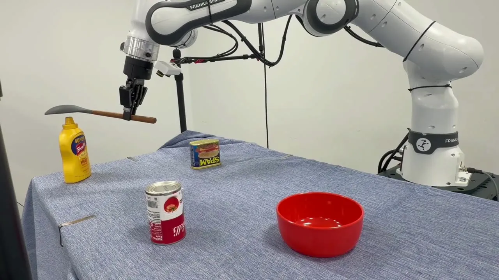

In AMP1, a frontier model controls the robot by writing Python code that calls a harness for sensing (RGB-D images, calibration, a fused point cloud), perception (a scene model it can correct) and motion (timed end-effector waypoints and gripper commands). It decides what to observe and can check each outcome before acting again.
PromptPick up the banana and place it in the bowl
This walkthrough needs WebGL.
@article{2026amp,
title = {On Agentic Manipulation Policies},
author = {Chen, Chen and
Bagherieh, Omid and
Appiah Balaji, Naveen Nikamanth and
Gonzalez, Jesse T. and
Heravi, Negin and
Islam, Fahad and
Li, Xueting and
Regli, Jean-Baptiste and
Ren, Kejia and
{\v{S}}vec, Petr and
Yoon, David J. and
M{\"u}ller, Matthias and
Koltun, Vladlen},
journal = {arXiv preprint arXiv:2611.09892},
url = {https://arxiv.org/abs/2611.09892},
year = {2026}
}